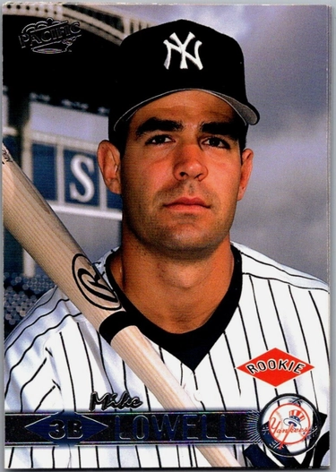

Mike Lowell
Career Highlights & Facts
(Facts are AI-generated and may require verification)
- Overcame a cancer diagnosis early in a professional career to win a major league comeback award.
- Earned a championship series most valuable player honor after hitting a home run in the final game of the series.
- Holds the record for the best single-season fielding percentage by a third baseman in the history of a storied professional club.
Would you like to find out more about Mike Lowell?
Player Biography
Mike Lowell January 4, 2012 / in BioProject - Person 2000s All-Stars Puerto Rico Puerto Rico and Baseball , Tony Conigliaro Award / by admin This article was written by Bill Nowlin Mike Lowell was a New York Yankees prospect who won a world championship with the 2003 Florida Marlins (beating the Yankees). He then became part of a salary dump that saw him sent to the Boston Red Sox, where he picked up a second world champion ring and was accorded the honor of being named Most Valuable Player in the 2007 World Series. He drove in 100 or more runs in three seasons, twice for the Marlins and once for the Red Sox. The third baseman set and still holds both the best single-season fielding percentage record and the best career fielding record in Red Sox franchise history. He’s a four-time All-Star and won a Silver Slugger and a Gold Glove. Mike’s father, Carl Lowell, was a ballplayer, too, a right-handed pitcher who played on the Puerto Rican National Team in 1971. Though born in San Francisco, Carl Lowell was Cuban and remains the only Cuban pitcher to have beaten the Cuban national team. When he had the opportunity to meet the Cuban president, Carl Lowell chose to remain on the bus while the other Puerto Rican players had photographs taken with the Cuban leader. Mike’s father-in-law, José Lopez, reportedly spent some 15 years as a political prisoner under Fidel Castro. 1 They weren’t the first in the family to experience political persecution. Carl Lowell’s grandfather and great-grandfather had both been placed in anti-German internment camps on the Isle of Pines for more than two years. 2 In fact, grandfather Carl Vogt-Lowell was an American citizen, born in Chicago, apparently imprisoned because of his Germanic surname. After being released from the prison camp, he returned to the United States and became a paratrooper near the end of World War II. 3 His son was born Carl Lowell, in California, but returned to the island with his father and was raised as a Cuban. He played baseball there, but his family elected to move to Puerto Rico when Carl was 11. There Carl (or Carlos, as he was called) attended San Ignacio High School and won an academic scholarship to St. Joseph’s University in Philadelphia. He played baseball at St. Joe’s, too, a pitcher who threw a no-hitter, and became MVP of the team, and – after returning to Puerto Rico for dental school – he was named to the Puerto Rican National Team. He was later inducted into the Puerto Rico Athletic Hall of Fame. 4 It was when the Puerto Rican team played in the 1970 World Series of Baseball that he declined to be presented to Fidel Castro. And then in 1972, the team traveled to Cuba for a Friendly Series and played and beat the Cuban National Team, 5-4. Carl had pitched, and left with a 5-1 lead, scoring that fifth (and ultimately deciding) run himself. Mike was born in San Juan, Puerto Rico, on February 24, 1974. His mother, Beatriz, was Cubana. When Mike was four, the family moved to the Miami area, where his father ultimately established a dental practice in Coral Gables. “My upbringing, my culture, my customs are all Latino,” Mike said in a September 2006 interview. 5 English became the dominant language in the Lowell home, though for family gatherings at holiday time, Spanish was more commonly spoken. Mike felt his English was a little better than his Spanish, grammatically, but he clearly fit in well with the Spanish speakers in the three big-league clubhouses where he plied his trade. Carl Lowell took a half-day off from work on Wednesdays each week to take Mike and his brother to batting practice, and he coached Little League as well. And yet, Mike said in 2007, “What I appreciated most about my dad was he didn’t push baseball on me.” That said, when Mike showed an interest, “He was big on the mental side of the game. I remember him telling me, ‘If you want to drive in the run, you’ve got to be the guy who wants it.’” 6 When eight-year-old Mike hit a game-winning homer one day in Little League, his father talked to him afterward: “Doesn’t it feel great to get that hit? If you want to do that more often, you have to want to be the guy that’s in that situation – because a lot of people say they want to be in that situation, but they don’t want to be. … What’s the worst that could happen? You make an out? Big deal. But if you want to be in that situation and you try your best, good things are going to happen.” 7 Mike graduated from Coral Gables High School, though he’d started high school at Christopher Columbus. He made the junior-varsity team there as a second baseman; one of his teammates was shortstop Álex Rodríguez . He began to sense he wasn’t going to make the varsity, though, and so transferred to Coral Gables High. 8 Mike had been drafted by the Chicago White Sox in the 48th round after high school, but elected not to sign. He became a freshman All-American at Florida International University, then played (and struggled) in a summer baseball league in Waynesboro, Virginia. The next summer he played for Chatham in the esteemed Cape Cod Baseball League. The FIU team, he said, was nationally ranked, at one point as high as eighth in the country. After he finished his junior year, he was drafted by the New York Yankees as their 20th-round pick in the June 1995 amateur draft. They settled on $20,000 plus the cost of tuition for his final two semesters of college. But they drafted him a catcher. He later said, “I had barely ever caught, and really had no desire to catch.” 9 It is worthy of note that Lowell graduated summa cum laude from FIU. 10 His degree was in finance. His first assignment was in Oneonta, New York, for the New York-Penn League Oneonta Yankees. He soon found himself playing third base, batting .260 in 72 games, with just one homer but with 18 doubles. He played in the instructional league, and then in 1996 played both for Greensboro and Tampa, batting .282 in both locations. Fielding was not always his forte; he committed 24 errors for Oneonta in 1995 and 34 for Greensboro and Tampa in 1996. In 1997 Lowell broke out, batting .344 in 78 games for Double-A Norwich (Eastern League). Advanced to the Triple-A Columbus Clippers during the season, he didn’t hit for as high an average (.276) but he hit 30 home runs for the season, 15 with Norwich and 15 with Columbus. He played in 126 games for Columbus in 1998, hitting 26 homers (and .304), earning himself a September call-up to the big leagues. Lowell was right-handed, stood 6-feet-4, and weighed 195 pounds. The 1998 Yankees were on their way to a world championship, ultimately sweeping the San Diego Padres in four games in the World Series. It was a team that won 114 games. In September, Lowell played in eight games. On September 13, his first at-bat produced a pop-fly single to center field at Yankee Stadium . A week later, he got into his second game and went 3-for-5, all singles. Those were his only four hits for the Yankees. He finished the tail end of the season 4-for-15 (.267) without a run batted in and with just one run scored. And he never played for the Yankees again. They had World Series MVP Scott Brosius and re-signed him for three more years. On February 1, 1999, Lowell was traded to the Florida Marlins for three pitching prospects – Mark Johnson , Ed Yarnall , and minor-leaguer Todd Noel. It was fortuitous. Lowell was pretty unlikely to break into the starting lineup for the Yankees at any time in the foreseeable future, whereas with Miami he was returning home and was positioned to earn a slot as a regular. 11 Marlins GM Dave Dombrowski said, “He has a chance to be a premium third baseman for years to come.” 12 And he had gotten married in the offseason, to Bertica Lopez. Eighteen days after the trade, during a routine physical for spring training, Lowell was taken aside, given some more tests, and diagnosed with testicular cancer. Two days later, on February 21, he had surgery which removed one of his testicles. Fortunately the cancer had not spread, and he was made aware that both Mike Gallego and John Kruk had beaten testicular cancer and gone on to big-league careers. 13 Mike and Bertica had met at Coral Gables High School. Oddly enough, after they had become engaged, she herself had an ovary removed due to a cyst which proved to be benign. They were able to joke that with her having one ovary and Mike having one testicle, they were a “perfect fit.” 14 Mike’s new father-in-law, José Lopez, had been a political prisoner in Cuba for 15 years. There were some allowances for family, however, and during one visit to his family, he met a remarkable woman who married him while he was in prison. Bertica was conceived during a conjugal visit, her father spending the first three years of her life behind bars before he was released to Venezuela. The Lopez family moved to Miami three years after that. 15 The surgery was successful. Lowell underwent several radiation treatments as well; he lost 10 pounds in the first few weeks of treatment due to the associated vomiting. In just over five weeks, though, he was able to play in an exhibition game in Calgary, and hit two doubles and a home run. 16 Lowell joined the Marlins, appearing in his first game on May 29. He was 0-for-4, but on May 30 was 2-for-3 with a single and a double and the first RBI of his career. That first base hit – the double to left-center off Cincinnati’s Steve Parris and over the center fielder’s head – broke the ice: “Okay, it was just a simple double, but, believe me, few hits in my career have offered such a sense of relief. I was back in it. All that cancer, radiation weakness was behind me now.” 17 He drove in one or more runs in each of the four games after that as well. Lowell was perhaps not at full strength but played in almost every game for the rest of the season – 97 in all – batting .253 with 12 home runs and 47 runs batted in. That winter, Lowell was presented the 1999 Tony Conigliaro Award “given annually to the major leaguer who overcomes adversity through spirit, determination and courage.” 18 Mike and Bertica had two children, Alexis and Anthony. Lowell got off to a very strong start in the 2000 season and after the team’s first 21 games was batting an even .300 with 19 RBIs. Then he declined to play the April 25 game, as part of a work stoppage to protest the handling of the Elián González case, that of a six-year-old Cuban refugee who was taken from his great-uncle’s home in America to be returned to Cuba. His absence was approved by the ballclub; it was announced that “the Marlins organization gave its OK for front-office workers, players and coaches to be absent without pay. The team will close its downtown merchandise store for the day.” 19 Lowell quoted as saying, “I’ve got problems with them (the US government) saying they’re concerned with the kid’s welfare, and they go in there like it’s World War III.” 20 Field manager John Boles , GM Dave Dombrowski, and team owner John W. Henry all approved of the form of protest. Over the long course of the 2000 season, Lowell saw his average dip to .249 in late June and was still just at .250 in mid-July, but he built it back up to .270 by season’s end, with 22 homers and 91 RBIs. He drove in an even 100 runs in 2001 (with 18 homers and a .283 average), and then 92 more in 2002, the year he was first accorded All-Star status. One highlight of 2002 was participating in the first triple play in team history. It came in the third inning of a 1-1 game against the Montreal Expos on July 28. There were runners on first and second and Vladimir Guerrero at the plate. On a 3-and-2 pitch, Guerrero slashed one to third base. Lowell saw baserunner Brad Wilkerson break from second toward third, which prompted him to get closer to the bag at third. He snagged it at ankle height and then stepped on the bag. “It was part good reaction, part self-defense,” Lowell said. “It was cool.” 21 Wilkerson pulled up helplessly and Lowell tagged him, and then took his time throwing to first since the other runner, José Vidro , had been off with contact, too, and was simply standing on second base. In 2003 Lowell enjoyed both strong individual stats (a career-high 32 homers, helping produce 105 RBIs, and a second All-Star nod), but also the ultimate in team success: the Florida Marlins won the World Series. He was hit in the hand by a Hector Almonte fastball on August 30, and the resulting fracture almost caused him to miss the opportunity to play in the postseason, but he was able to come back just in time to get into one more game, on September 28 (1-for-4,with a double), and continue from there. Lowell only had three plate appearances in the Division Series, without reaching base. In Game One of the NLCS, against the Cubs at Wrigley Field , after Sammy Sosa ’s two-run homer in the bottom of the ninth had tied it up, the score stood 8-8 after 10 innings. Marlins manager Jack McKeon had already used the team’s primary pinch-hitter, Todd Hollandsworth . Reliever Ugueth Urbina was due to lead off for the Marlins in the top of the 11th. McKeon asked Lowell to pinch-hit. On the sixth pitch of the at-bat, Lowell homered to center field off Mark Guthrie , the game-winning hit. Father Carl Lowell said he had “cried like a baby, because I had seen him go through the personal suffering” of missing almost the entire final month of the season, which could have cost the team a shot at the playoffs and probably did prevent Mike Lowell from finishing higher than 11th in the MVP balloting. 22 The Cubs won the next three games, but come Game Five, now an elimination game, Florida’s Josh Beckett shut out the Cubs on just two hits. Lowell won the game with another home run, a two-run shot off Carlos Zambrano in the bottom of the fifth. It looked as though the Cubs were wrapping it up in Game Six , with a 3-0 lead at home through seven innings. The Marlins had only three hits to that point, but then exploded with an eight-run eighth that pushed the Series to a seventh game. In that eighth inning – it embraced the notorious Steve Bartman incident which robbed the Cubs of an out on a foul ball – Lowell came up with the score tied, 3-3, and runners on second and third with one out. He was walked intentionally, scoring three batters later on Mike Mordecai ’s three-run double. Lowell had hit only .200 in the NLCS (4-for-20), but two of the hits were game-winning homers, and he had scored five times. In the 2003 World Series against the New York Yankees, he was 5-for-23 at the plate, with two RBIs (both in Game Five), thanks to a single to center in the bottom of the fifth that boosted a 4-1 lead to 6-1. The final score was 6-4, with Lowell’s two runs driven in being the difference in the game. More than 55,000 fans saw the Marlins’ Josh Beckett shut out the Yankees at Yankee Stadium in the final Game Six, limiting them to five hits in a tight 2-0 win. Beckett was named Series MVP. Mike Lowell earned a world championship ring. There had been a medical scare during the ’03 season. Lowell had hit 28 of his homers by the Marlins’ 95th game, but a hip tweak and playing for more than three weeks with a strained groin prompted him to get an MRI. The doctors found what they feared was a recurrence of cancer; fortunately it turned out to be fibrous dysplasia, and a huge relief to the Lowell family. 23 With a certain irony, the home runs coming so often – but then dropping off in the second half of the 2003 season – prompted whispering that perhaps Lowell had been taking steroids. He himself had wondered back in 1999 if he would need to, after the removal of a testicle, but doctors had advised him “my body would adjust – and if I did take testosterone or anything related to steroids, it would raise my testosterone levels to a point where my healthy testicle was going to be fooled into shutting down. That’s where any talk of supplements ceased for me.” 24 At the end of the 2003 season, owner Jeffrey Loria signed Lowell to a four-year deal for $32 million. “I’m embarrassed to answer when people who don’t know baseball ask me how much I make. I can’t justify the money they pay me. Every time I look at one of my checks, I can’t believe it,” he told Jeff Miller of the Miami Herald . He never flaunted his wealth, though, and the family stuck to its values; when Mike offered to pay for his younger brother’s and sister’s school, his father said thanks but no thanks. 25 In 2004 the Marlins finished third, just four games over .500 (83-79). Lowell had another very good year, another All-Star year (.293, 27 HR, 85 RBIs). His biggest day was April 21, with a three-homer game with four RBIs in an 8-7 12-inning win in Philadelphia. Lowell was popular with other players, too. Before the 2004 All-Star Game, third baseman Scott Rolen of the Cardinals talked about Lowell’s world championship ring, and said, “He plays the game right. He has a great knowledge of the game. He goes out and competes every day. He understands the importance of running out there and being accountable and being on the field. He’s a fun guy to watch.” Then, to keep from getting too carried away with compliments, he added a further assessment: “He’s a [jerk]. I think his head is kind of disproportional to the rest of his body.” 26 Lowell had a discouraging year in 2005. The positive was his defense. In 150 games, he committed only six errors, a .983 fielding percentage, and he won a Gold Glove. 27 On offense, however, he put up what he himself called “grim numbers”: a .236 batting average, with just eight home runs. He drove in only 58 runs. “That was the reality of my ‘05 season,” he wrote. “And these grim numbers were all the more inexplicable given that I was coming off perhaps the best year of my career in ’04.” 28 He’d maybe tinkered too much with his swing. It was reported that in August a contact lens he wore on his lead eye broke and he never found a suitable replacement, but Lowell himself says he had no problems with contacts that year. 29 Inexplicable was a good word. After the season, he turned for advice to Gary Denbo, who had been one of his minor-league hitting coaches in his early days with the Yankees. Denbo was coaching in Japan at the time, but he talked with Lowell and urged him to get back to fundamentals, even to start using a batting tee again. Denbo then looked at some video Lowell sent him, and when Denbo returned to Tampa, they worked together simply focusing on hitting balls up the middle. In the meantime, on November 24, Lowell changed organizations. As he put it, the Boston Red Sox were “forced to take me in a trade with the Florida Marlins if they were going to get the blessed arm of Josh Beckett.” 30 The Red Sox wanted Beckett badly. He was 25 years old, coming off a 15-8 season with the Marlins, and had been the World Series MVP for them in 2003. The Marlins told the Red Sox that if they wanted Beckett, they had to take Lowell, too, saving them $18 million for the final two years of his four-year contract. The two were traded, with Guillermo Mota , in exchange for four young players with potential: Jesús Delgado , Harvey García , Hanley Ramírez , and Aníbal Sánchez . It was a trade that worked well for both parties – Beckett excelled for the Red Sox, a 20-game winner in 2007; Hanley Ramirez was Rookie of the Year in 2006, hit .300 in seven seasons in Miami, and won the NL batting crown in 2009. Though the Red Sox didn’t know it at the time, they were not only acquiring the 2003 World Series MVP, but also – in Mike Lowell – the 2007 World Series MVP as well. Lowell, of course, wanted to prove himself in 2006, and succeeded, starting with a home run on Opening Day in Texas. He put together a solid season, both on offense and defense, batting .284, hitting 20 home runs, and driving in 80 runs. His .987 fielding percentage in 2006 was (and remains) the best for a third baseman in Red Sox franchise history. The short-season A ball minor-league affiliate Lowell Spinners scheduled a little fun during the year, changing their name for one night (July 28) to the Mike Lowell Spinners. They even tailored their jerseys for the game to read “Mike Lowell” on the front. 31 The year 2007 was a magical year, though Lowell started shakily in the field with three errors in the second game of the season, and by the end of April he already had eight errors, two more than in the entire 2006 season. He committed 15 errors in all in 2007. By the end of April, though, he already had 20 RBIs. There was no late-season injury this time to threaten his availability in the postseason. Lowell drove in 26 months in the month of September alone, helping the Sox seal the deal and clinch a playoff berth. He finished the season with 120 RBIs (a team record for a third baseman) and a .324 average. The Red Sox swept the Division Series over the Angels, scoring 19 runs to their four. Lowell drove in one run in each of the three games. In the ALCS against the Cleveland Indians, it took seven games to win. Lowell drove in three runs in Game One (including the winning run) and three more in Game Two, a game lost when the Indians scored seven runs in the top of the 11th. Cleveland won three of the first four games, but then the Red Sox bounced back with three of wins of their own, lopsided ones at that. Lowell drove in one run in Game Six and one more in Game Seven, with a sacrifice fly that drove in the third run in an 11-2 win. Then came the World Series against the Colorado Rockies. Josh Beckett won Game One with ease, 13-1, becoming 4-0 in the postseason. Curt Schilling won a 2-1 squeaker in Game Two , with Lowell’s double in the bottom of the fifth breaking a 1-1 tie. In Game Three , in Denver, he drove in a pair in the top of the third. And in the final Game Four of the sweep, Lowell homered to lead off the top of the seventh, giving Boston a 3-0 lead at the time (the Red Sox won, 4-3.) “It was my third at-bat. … I looked for a sinker in and there it was. … I knew I hit it really well, with nice trajectory, but at that point I didn’t take anything for granted because it was the World Series. I was looking at the left fielder and saw him running and subsequently slow down. That is a great feeling. But what I really, really enjoyed was that home-run trot.” Harking back to the advice his father gave him when he was eight, he said, “This was the moment I had yearned for ever since that car ride with Dad. To be on the big stage at the big moment. It was also the culmination of years of what I call my visualizations.” 32 A number of players could have been awarded the MVP trophy, but it was presented to Mike Lowell. The Boston Globe ’ s Bob Ryan said he felt that Lowell merited it even before Game Four, then he scored the second run and then homered for the third run. 33 He’d hit .333 in the ALDS, .333 in the ALCS, and .400 in the World Series, with 15 postseason RBIs. Lowell’s contributions in the regular season earned him fifth in league MVP voting. Three of the 2007 Red Sox won World Series MVPs – Beckett (with the Marlins) in 2003, Lowell in 2007, and David Ortiz in 2013. Lowell’s contract was up at the end of the year. Fan sentiment was vocal at postseason events. “Bring back Lowell!” was the cry. In the celebratory parade, someone handed Jason Varitek a sign reading “Re-sign Lowell” and he held it throughout. Manny Ramírez yelled it repeatedly to fans along the route. The sentiment was so strong that the team almost had no choice. The Red Sox didn’t waste time, and in mid-November signed him to a three-year, $37.5 million deal. He probably could have gotten a fourth year elsewhere; Peter Gammons reported both the Phillies and Dodgers had offered it. “How cool is that?” asked Curt Schilling. “Leaving years and dollars on the table to come back here for three more years, good stuff.” 34 The 2008 season was a struggle. Lowell lost a few weeks in August and early September, and in October had to undergo surgery to repair a torn labrum in his right hip. He hit .274 with 73 RBIs, and put up very similar figures in 2009: .290, with 75 RBIs. He homered 17 times in each year. Just before spring training began in 2010, the Red Sox tried to trade him to Texas, agreeing to pay 75 percent of his salary because a damaged ligament in his right thumb had caused him to fail a physical. In 2010, with Adrian Beltré at third base and Kevin Youkilis at first, Lowell had what became his final year, appearing in only 73 games, batting for a .239 average with 5 homers and 26 runs batted in. In early September he announced his retirement. “It’s been 12 outstanding years and I don’t regret anything in my career,” he said. “I’m super happy to spend time with my family, but I’m super happy to say I played baseball as my job. I wanted to do it since I was 6 years old. To have that chance has really been unbelievable.” 35 On October 2, the Red Sox held a “Thanks, Mike Night” at Fenway Park . In 2011 he began as a studio analyst on the MLB Network, and as of 2026 continues to work for the network. Having retired from the daily grind of baseball provides opportunities to make up for some of the inevitably “lost time” with family. In mid-November 2016, Lowell says, “I am enjoying plenty of family time. Specifically, coaching my son’s 12u baseball team. I am also enjoying watching my daughter as she entered high school and played volleyball there as a ninth grader.” 36 In 2018, Mike Lowell was inducted into the Boston Red Sox Hall of Fame. An article in 2025 said of Lowell “he’s proud having followed in his dad’s footsteps, having coached Alexis’ middle school volleyball team, and helping coach Anthony through Little League, middle school and high school baseball.” 37 Having won World Series rings with both the Marlins and the Red Sox, Lowell said, “I’ve been asked a lot which one feels better. They’re so different. With the Marlins, there was a lot of satisfaction proving people wrong. With the Red Sox, we were a very complete team. When you’re with a franchise like the Red Sox, expectations are really unrealistically high and to be able to meet those expectations, that’s really rewarding as well.” 38 Last revised: April 20, 2026 Sources In addition to the sources noted in this biography, the author also accessed Lowell’s player file from the National Baseball Hall of Fame, the Encyclopedia of Minor League Baseball , Retrosheet.org, Baseball-Reference.com, and the SABR Minor Leagues Database, accessed online at Baseball-Reference.com. Most of the story regarding the political problems the family faced – and most of the information regarding Mike’s upbringing in Cuba, Puerto Rico, and Florida come from his 2008 autobiography, Deep Drive. Notes 1 Bill Nowlin, “Hot Season at the Hot Corner,” Diehard , October 2006. 2 Mike Lowell with Rob Bradford, Deep Drive (New York: Celebra, 2008), 39. 3 Deep Drive, 40. 4 Deep Drive , 81. Also see caption on photograph in the photo insert opposite page 146. 5 Author interview with Mike Lowell, September 2006. 6 Nick Cafardo, “A Firm Grasp at Third,” Boston Globe , March 18, 2007. 7 Deep Drive , 5, 6. 8 Deep Drive , 98-103. Alex Rodriguez transferred, too, to Westminster Christian High School. 9 Deep Drive , 112, 113. 10 Clark Spencer, “Home Schooled,” Miami Herald , February 29, 2004. 11 Regarding heading to Miami, after being with the Yankees, Lowell said, “I was ecstatic….I was jumping up and down. People are like, ‘you want to go to the Marlins?’ I’m like, ‘I was going back to Triple A.’” Tom D’Angelo, “Mike Lowell made the right choice in 2010, opting to retire, but it wasn’t easy,” Palm Beach Post, May 23, 2025. 12 Rod Beaton, “Yankees Get Pitching, Marlins Finally Get Lowell,” USA Today , February 3, 1999. 13 Joel Sherman, “Lowell Undergoes Testicular Surgery,” New York Post , February 23, 1999. 14 Deep Drive , 139. 15 Deep Drive , 41-43. 16 Fred Tasker, “Mike Lowell Remembers Vividly the Day the Fort Lauderdale Oncologist Told Him He Had Testicular Cancer,” Miami Herald , June 13, 2002. 17 Deep Drive , 145. 18 Bloomberg News, “Lowell Is Honored,” New York Times , December 14, 1999. See a full SABR book on the award: Overcoming Adversity: Baseball’s Tony Conigliaro Award , edited by Bill Nowlin and Clayton Trutor (SABR: 20170. 19 Associated Press, “Marlins Join Cuban-American Protest,” AOL News, April 25, 2000. 20 Ibid. The Marlins lost the game to the Giants, 6-4, in 11 innings. 21 Ted Hutton, “For Lowell, Triple Play ‘Was Cool,’” South Florida Sun Sentinel , July 29, 2002: 3C. 22 “Home Schooled.” 23 Any family that has experienced good news of a medical nature can relate to Lowell’s talking about the family dancing around his brother Victor’s apartment, joyfully chanting “fibrous dysplasia” over and over, when three doctors concurred in that diagnosis. See Deep Drive , 13, 14. 24 Deep Drive , 154. 25 Jeff Miller, “A Bargain, Even at $32 Million,” Miami Herald , December 4, 2003. 26 Mike Berardino, “1st Class at 3rd; Lowell, Rolen,” Sun-Sentinel, July 13, 2004. 27 Lowell did pull off the first two hidden ball tricks of the 21st century – on September 15, 2004, getting Montreal’s Brian Schneider, and on August 10, 2005, tagging out Luis Terrero of the Diamondbacks. 28 Deep Drive, 21. 29 Chris Snow, “Lowell Offers His Spin,” Boston Globe , November 26, 2005. Mike Lowell e-mail to author, November 14, 2016. 30 Deep Drive, 7. 31 “Name Game,” USA Today, July 18, 2006. 32 Deep Drive , 205-207. 33 Bob Ryan, “Exclamation Point Added,” Boston Globe , October 29, 2007: E4. 34 “Red Sox Keep World Series MVP Lowell with Three-Year Deal,” ESPN.com, November 19, 2007. 35 John Tomase, “As End Nears, Mike Lowell Looks Back at Career,” Boston Herald , September 13, 2010. 36 Mike Lowell e-mail to author, November 14, 2016. 37 Tom D’Angelo. 38 Tom D’Angelo. Full Name Michael Averett Lowell Born February 24, 1974 at San Juan, (P.R.) Stats Baseball Reference Retrosheet If you can help us improve this player’s biography, contact us . Tags 2000s All-Stars · Puerto Rico · Puerto Rico and Baseball · Tony Conigliaro Award Share this entry Share on Facebook Share on X Share on LinkedIn Share on Reddit Share by Mail
Career Totals
| WAR | AB | H | HR | BA | R | RBI | SB | OBP | SLG | OPS | OPS+ |
|---|---|---|---|---|---|---|---|---|---|---|---|
| 24.8 | 5813 | 1619 | 223 | .279 | 771 | 952 | 30 | .342 | .464 | .805 | 108 |
Statistics via Baseball-Reference.com
The Original Clue